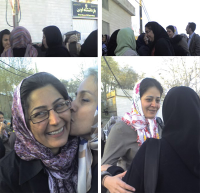
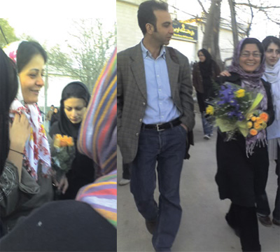
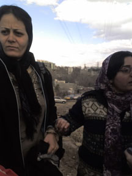
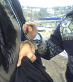

|
|

دو یارمان، ناهید کشاورز و محبوبه حسین زاده آزاد شدند
يكشنبه26 فروردین 1386


تغییر برای برابری : امروز یکشنبه 26 فروردین غروب زیبایی بود، روز پیروزی مقاومت در برابر فروریختن بود. غروب امروز دو یارمان ناهید کشاورز و محبوبه حسین زاده آزاد شدند.
از تمام افراد، فعالان اجتماعی و سیاسی، سازمان ها و گروه های حقوق بشری و زنان و...که با امضاها، بیانیه ها و اطلاعیه های خود برای آزادی آنان تلاش کردند، به ویژه از روزنامه نگاران ونشریات چاپی، اینترنتی و صوتی و تصویری که به پوشش اخبار ما پرداختند سپاسگزاریم.
قرار کفالت ناهید کشاورز و محبوبه حسین زاده پذیرفته شد
صبح روز یکشنبه 26 فروردین ناهید کشاورز در تماس تلفنی کوتاهی خبر می دهد : «الان اسم مان را صدا کردند داریم می رویم دادگاه انقلاب به بچه ها و وکلایمان خبر بدهید ».
زمان شتاب می گیرد، صدیقه کشاورز که بی اطلاع از ماجرا برای تکرار پی گیری های بی پاسخ از وضعیت خواهرش به همراه پروین ضرابی راهی دادگاه شده است در میانه راه خبر را می گیرد و خود را زودتر از همه به در انتقال بازداشت شدگان می رساند و منتظر می ایستد تا آنها را هنگام آوردن به دادگاه ببیند. و می بیند :« هر دو خیلی سرحال بودند و شاد» صدیقه به داخل دادگاه می رود و سپس بیرون می آید:« گفتند یک ساعت بعد دادگاه تشکیل می شود، برو یک ساعت دیگر بیا».
بتدریج سایر اعضای خانواده ها و دوستان ناهید و محبوبه می آیند تا به همراه آنان لحظه های نگرانی جلو دادگاه انقلاب را با امید و همدلی تاب آورند.
یک ساعت بعد خانواده ها به داخل دادگاه می روند. نسرین ستوده و نسیم غنوی که به طور مشترک وکالت ناهید و محبوبه را دارند نیز می رسند و وارد دادگاه انقلاب می شوند آنها نیز مدتی بعد بیرون می آیند. نسرین ستوده با همان آرامش همیشگی اش می گوید:« مارا نپذیرفتند و اجازه ورود ندادند. چون ازنظر دادیار پرونده، تحقیقات مقدماتی تمام نشده است و در این مرحله وکیل نمی تواند حضور داشته باشد ولی کفالت را پذیرفته اند.»
صدیقه هم به شتاب بیرون می آید. لبخند به لب دارد وشاد است:« کفالت را پذیرفتند. کفیل می خواهند» و پرسشگرانه :« یعنی آزاد می شوند؟!» نادر همسر ناهید قرار است کفیل ناهید شود. برای کفالت محبوبه به احترام شادفر زنگ می زنند. این معلم بازنشسته جنبش زنان به همراه طلعت تقی نیا و پروین ضرابی و چند مادر دیگر از مادران کمپین یک میلیون امضایمان، طی این دوهفته روزهای زیادی خانواده های ناهید و محبوبه را هنگام رفتن به زندان و دادگاه همراهی کرده اند تا بدانند و بدانیم تنها نیستیم، تا بفهمانند در جنبش زنان شکاف نسل ها جایی ندارد چرا که موقعیت نابرابر حقوقی مشترکمان نسل به نسل و سینه به سینه روایت، تجربه و منتقل می شود و از مادرانمان حامیانی بزرگ می سازد.
پس از ساعت یک بعدازظهر احترام شادفر وارد دادگاه می شود اما پس از مدتی نادر بیرون می آید وکالت نادر حاج محسن را برای هر دو آنها پذیرفته اند. برای هرکدام 20 میلیون تومان. نادر می گوید:« می برنشان اوین. گفته اند آزادشان می کنیم. اما باید ساعت 5 برویم اوین. همه با شتاب به سمت در خارج کردن بازداشت شدگان می روند. ناهید و محبوبه بیرون می آیند:«عصری آزاد می شویم.»
شادی در دلمان می خندد. تا ساعت 5 عصر بازهم منتظر می مانیم.
آیا آزاد می شوند؟!
اخبار روز شنبه 25 فروردین
ناهید کشاورز ومحبوبه حسین زاده پس از دو هفته همچنان در بازداشت و بلاتکلیفی
چهارشنبه 22 فروردین برای نخستین بار ناهید کشاورز و محبوبه حسین زاده برای بازجویی با چشم بند به بند 209 منتقل شدند و پس از بازجویی مجددا به بند عمومی زنان بازگردانده شدند.
آنها در تماس تلفنی به خانواده های خود گفته اند:« به ما گفتند ما روز 14 فروردین از حضور شما مطلع شدیم و در جریان دستگیری شما دخالت نداشتیم. آنها گفتند اقدامات لازم را برای آزادی شما انجام می دهیم و همین امشب (چهارشنبه ) آزاد می شوید.» اما آنها آزاد نشدند.
صبح امروز شنبه 25 فروردین در تماسی که با خانواده های آنان داشتیم اعلام کردند هنوز با آنها تماسی برای درخواست کفالت گرفته نشده است. ناهید کشاورز ومحبوبه حسین زاده نیز صبح امروز در تماس تلفنی با خانواده هایشان اعلام کردند که تا کنون هیچ اقدامی برای آزادی آنها صورت نگرفته است. اکنون دوهفته از بازداشت آنها در روز 13 فروردین می گذرد و تا کنون هیچ منبعی پاسخ گو نبوده است.
اخبار مرتبط:
سیزده بدر متفاوت! روز دستگیری در روز طبیعت / ناهید جعفری
زندان زنان تا شوهرکشی،امیرعباس نخعی
هزار امضاء علیه تفکر هزاره ای / حسن درویش پور
اطلاعیه هم اندیشی فعالان جنبش زنان در محکومیت دستگیری فعالان کمپین یک میلیون امضا
بیانیه کانون هستیا اندیش در مورد بازداشت ناهید کشاورز و محبوبه حسین زاده
شما کدام بند هستید؟ / وبلاگ پاگرد
اخبار روزچهارشنبه 22 فروردین
به رغم اظهارات سخنگوی قوه قضائیه، خانواده و وکیل ناهید کشاورز و محبوبه حسین زاده پاسخی از دادگاه نگرفتند
همان طور که در خبرها آمده دیروز سه شنبه سخنگوی قوه قضائیه درباره بازداشت ناهید کشاورز و محبوبه حسین زاده به نقل از روزنامه اعتماد ملی گفته بود :« براي هر متهمي كه بازداشت ميشود قاضي بنا به شرايط پرونده و موارد اتهامي او قرار سنگين و يا سبك صادر ميكند، دقيقاً مانند اتفاقي كه در پرونده اين دو خانم صورت گرفته و قاضي با توجه به محتويات پرونده قرار كفالت صادر كرده است.» او همچنین گفته بود :« براي قرار صادرشده هنوز كفيل معرفي نشده است تا شرايط آزادي آنها فراهم شود. » سخنگوي قوه قضاييه پس از آنكه اتهام اين دو نفر را تشويش اذهان عمومي اعلام كرد بود در پاسخ به سوال خبرنگاري كه نظرش را در مورد اصلاح قوانين زنان پرسيد بودنیز گفت:«قوانين براي زن و مرد نبايد تفاوتي داشته باشد، بنابراين وقتي به قانوني پيشرفته و منطبق بر حقوق انساني گفته ميشود، برابري و يكساني اجراي قوانين نيز در آن ديده ميشود»
در پی اظهارات سخنگوی قوه قضائیه براین مبنا که « برای ناهید کشاورز و محبوبه حسین زاده قرار کفالت صادر شده است» امروز چهارشنبه 22 فروردین خانواده های بازداشت شدگان به همراه وکیل خود نسرین ستوده به دادگاه انقلاب مراجعه کردند تا برمبنای اظهارات سخنگوی قوی قضائیه کفیل بازداشت شدگان را معرفی کنند. در شعبه امنیت ابتدا نسرین ستوده وکیل آنان به دفتر قاضی پرونده آقای حداد وارد شد. او می گوید : « ضمن آنکه وکالت نامه موکلانم از من پذیرفته نشد، که قاضی پرونده در پاسخ به خبر مربوط به قرار کفالت صرفا به این بسنده نمودند که قرار تامین صادر شده است اما چون پرونده درمرحله تحقیقات مقداماتی است اما از ارائه هرگونه اطلاعاتی خوداری نمود».
سپس در پی مراجعه خانواده ناهید کشاورز به دفتر قاضی حداد برای پی گیری قرار تامین آنها بازهم بی پاسخ ماندند. صدیقه کشاورز می گوید:« به من گفتند شما برای چه آمده اید، شما در این پرونده کاره ای نیستید» . نادر حاج محسن همسر ناهید نیزمی گوید:« من گفتم بیش از یک هفته است که همسرم در زندان و بند عمومی زنان بسر می برد و پی گیری ها ما برای تعیین وضعیت همسرم و ارائه کفالت به جایی نرسید، دیروز که سخنگوی قوه قضائیه اعلام کردند که می توانیم کفالت بگذاریم خدمت شما آمدیم. اما ایشان با عنوان اینکه درگیر پرونده ای دیگری هستند در واقع ما را از اتاق بیرون کردند و از امضای برگه های خروج ما نیز خودداری کردند. ما هنگام خروج از دادگاه با ممناعت ماموران مواجه شدیم تا اینکه سرانجام برگه خروج ما را مهر زدند.
زهرا حسین زاده خواهر محبوبه حسین زاده نیز کمی دیرتر از خانواده ناهید کشاورز به دادگاه مراجعه کرده بود اجازه ورود به شعبه امنیت را نیافت:« تلفنی به ما گفتند نمی توانید بالا بیایید من گفتم چطور اجازه نمی دهید وقیتی سخنگوی قوه قضائیه گفته است که باید کفیل بیاوریم ، اما به من جواب دادند که ما از ایشان دستور نمی گیریم.
اخبار مرتبط:
حقوق زن و تشويش افكار عمومى؟ / گفتگوی صدای آلمان با همسر ناهید کشاورز و نسرین ستوده
نگراني کارشناسان سازمان ملل از دستگيري مدافعان حقوق زنان
قانوني تصويب نکنيد که مجبور بشويد در پستو قايمش کنيد / وبلاگ الیزه
براي مهرباني محبوبه كه اگر نباشد زمين چيزي كم دارد / وبلاگ زنانه
اخبار روز سه شنبه 21 فروردین
به گزارش ایلنا از نشست خبری سخنگوی قوه قضاییه جمشيدي در پاسخ به سوال خبرنگاري كه از وي در مورد پرونده ناهيد كشاورز و محبوبه حسينزاده، از زنان بازداشتشده در پارك لاله سوال كرده بود، گفت: اين افراد هماكنون در بازداشت به سر ميبرند اما بازپرس پرونده براي آنها قرار كفالت صادر كرده است. اين افراد ميتوانند با گذاشتن كفيل، آزاد شوند.
این درحالی است که خانواده های ناهید کشاورز و محبوبه حسین زاده که صبح امروز در بند عمومی با آنها ملاقات داشتند اظهار می دارند که تا کنون از سوی دادگاه با آنها تماسی گرفته نشده است و در مراجعات مکررشان به دادگاه نیز اجازه دیدار با قاضی یا بازپرس برای معرفی کفیل داده نشده است.
گفتنی است ناهید کشاورز و محبوبه حسین زاده از فعالان کمپین یک میلیون امضا روز 13 فروردین در پارک لاله تهران هنگام جمع آوری امضا بازداشت شدند. طبق گفته آنان در دادگاه انقلاب شعبه یک امنیت برای آنها کفالت 20 میلیون تومانی تعیین شده بود اما بعد از دادگاه به بند عمومی زندان زنان اوین منتقل شده و کفیلی هم برای آنها از سوی دادگاه در خواست نشد.
اخبار روز دوشبه 20 فروردین
خواهران ناهید کشاورز ومحبوبه حسین زاده امروز دوشنبه 20 فروردین نیز به دادگاه انقلاب مراجعه کردند اما مجددا به آنها گفته شد که تحقیقات مقدماتی ادامه دارد. این در حالی است که از 13 فروردین که این دوفعال جنبش زنان در پارک لاله دستگیر شده اند تا کنون مورد بازجویی و بازپرسی قرار نگرفته اند و با اینکه برای آنها قرار کفالت صادر شده آنان را بلاتکلیف در زندان نگه داشته اند.
خاطرات زنان ايراني چقدر مي ارزد؟/ روز آن لاین
مقاومت زنانه / وبلاگ آوای رهایی
ناهید در پراکنده های زندان / وبلاگ فصل زن
کوتاه برای محبوبه / وبلاگ فصل زن
اخبار روز یکشنبه 19 فروردین
نسرین ستوده وکیل اعضای بازداشت شده کمپین موفق به مطالعه پرونده متهمان خود نشد. او که امروز 19 فروردین به دادگاه انقلاب مراجعه کرده بود درگفتگو با زنستان گفت «: امروز به وکالت ناهید کشاورز و محبوبه حسین زاده به معاونت امنیت دادگاه انقلاب مراجعه کردم و تقاضای مطالعه پرونده را جهت دفاع از موکلانم نمودم. متاسفانه مسئول مربوطه با اظهار اینکه پرونده در مرحله تحقیقات مقدماتی است اجازه مطالعه پرونده را به من نداد و مطالعه پرونده را به هفته آتی موکول کرد.»
گفتنی است ناهید کشاورز و محبوبه حسین زاده از فعالان کمپین یک میلیون امضا روز 13 فروردین در پارک لاله تهران هنگام جمع آوری امضا بازداشت شدند. طبق گفته آنان در دادگاه انقلاب شعبه یک امنیت برای آنها کفالت 20 میلیون تومانی تعیین شده بود اما بعد از دادگاه به بند عمومی زندان زنان اوین منتقل شده و کفیلی هم برای آنها از سوی دادگاه در خواست نشد.
اززمان بازداشت آنان تا کنون برخی از سازمان های حقوق بشری چوندیده بان حقوق بشر و بیش از 1200 نفر از فعالان جنبش های اجتماعی به بازداشت غیر قانونی آنها اعتراض کرده و خواستار آزادی آنان شده اند.
اظهارات بهاره هدایت و عبدالله مومنی در مورد دستگیری دو تن از فعالان جنبش زنان
اخبار روز شنبه 18 فروردین 1386
دیدار نسرین ستوده با موکلانش ناهید کشاورز و محبوبه حسین زاده
بازهم خانواده ها اجازه دیدار با قاضی یا بازپرس را نیافتند
نسرین ستوده : پس از گذشت 5 روز بازداشت در اوین، هیچ اقدامی جهت رفع ابهام ازپرونده موکلانم صورت نگرفته است.
نسرین ستوده وکیل ناهید کشاورز و محبوبه حسین زاده نیز صبح امروز 18 فروردین برای امضای وکالت نامه محبوبه حسین زاده به زندان اوین مراجعه کرد و موفق به تنظیم وکالت نامه و دیدار با موکلانش شد. او درباره اتهام موکلانش به زنستان گفت: « طبق اظهار نظر موکلانم، اتهاماتی که تا کنون به آنها تفهیم شده است اقدام علیه امنیت ملی از طریق تبلیغ علیه نظام بوده است. بدیهی است که در روزهای آتی برای مطالعه پرونده موکلانم به دادگاه مراجعه می کنم » نسرین ستوده همچنین افزود:« طبق اظهار نظر موکلانم از روز 14 فروردین که قرار بازداشت آنها صادر شده و به اوین منتقل شده اند تا امروز که 5 روز می گذرد هیچ اقدامی اعم از بازجویی، یا هرگونه اقدامی جهت رفع ابهام ازپرونده موکلانم صورت نگرفته است.» ستوده پاسخ به این پرسش که «اگر قرار کفالت برای آنان صادر شده، چرا به جای درخواست کفیل آنها را همچنان در بازداشت نگه داشته اند» را منوط به مطالعه پرونده کرد.
بازهم خانواده ها اجازه دیدار با قاضی یا بازپرس را نیافتند
صدیقه کشاورز: به ما گفتند حالا یک مدت باید بروید و بیایید تا جواب بگیرید!
صبح روز شنبه 18 فروردین خانواده های اعضای بازداشت شده کمپین برای پیگیری وضعیت ناهید کشاورز و محبوبه حسین زاده به دادگاه انقلاب مراجعه کردند. در آنجا نیز اجازه دیدار با قاضی یا بازپرس پرونده داده نشد . صدیقه کشاورز می گوید به ما گفتند حالا یک مدت باید بروید و بیایید تا جواب بگیرید. فقط گفتند برای ملاقات و همچنین تحویل لباس می توانید به زندان اوین راجعه کنید ما هم به اوین رفتیم و ناهید ومحبوبه را دیدیم .
ناهید و محبوبه حسین زاده خودشان هم شب گذشته با خانواده هایشان تماس تلفنی گرفته بودند . محبوبه گفته است که در بند زنانی هستند که مرتکب قتل شده اند :« واقعا چهره تمام قوانین تبعیض آمیزی را که نقد می کنیم به طور عینی اینجا می بینیم. بند تنبیهی خیلی بد بود، خودزنی و دیگرزنی زیاد بود و خیلی احساس خطر می کردیم. رد چاقو روی بدن همه آنها وجود داشت ولی خودشان که مقصر نیستند. آنها خیلی وضعیت بدی دارند، هیچ کس هم کاری به کارشان ندارد. واقعا باید شرمنده بود از شرایطی که آنها دارند و کسی هم احساس مسئولیت نمی کند.»
محبوبه و ناهید از یاری و لطف زنان دربند عمومی گفته اند اما تاکید کرده اند که زندانیان این بند هم در شرایط نابرابری بسر می برند. ناهید گفته است « اینجا سلسله مراتب خیلی وحشتناک است. یکی ازبچه ها غش کرده بود ومن رفتم به مسئولان زندان گفتم حالش خیلی بد است باید برود بهداری، گفتند ببین این چقدر پررو است هنوز نیامده حرف می زند، من هم گفتم من اگر فعال حقوق زنان هستند بیخود می کنم خودم را فعال حقوق زنان بدانم ولی وقتی یکی جلوی چشمم پرپر می زند حرف نزنم ! اینجا یک جور زندان در زندان است و سلسله مراتب بیداد می کند. کار مسئولان را زندانی ها انجام می دهند آنها هم سلسله مراتب خودشان را دارند. اینجا همه چیز را باید خرید. آنهایی که وضعیت مالی خوبی ندارند برای بقیه کار می کنند. مثلا یک زن جوانی هست که مانند دخترکان معصوم می ماند شوهرش را کشته، ملاقاتی ندارد و اهل سراب است. برای زندانی ها مخصوصا زندانی های مالی کار می کند و هرکدام به او هفته ای 300 تومان می دهند. می دانی یعنی چی؟! هیچی !» طبق گفته آنها وضعیت بهداشتی و غذایی زندان هم چندان رضایت بخش نیست.
اخبار مرتبط :
بيانيه سازمان ديده بان حقوق بشر: : فعالان حقوق زنان را آزاد کنید
نظاميان انگليسی، رافت جمهوری اسلامی و فعالان زن / بهمن احمدی امويی / کانون زنان ایرانی
دروغ سیزده / سارا لقمانی / زنستان
براي محبوبه حسين زاده / فریده غائب / کانون زنان ایرانی
ناهید عزیزم، می دانم الان داری چه کار می کنی!/ هما مداح / زنستان
اخبار روز پنج شنبه
روز پنج شنبه خانواده های بازداشت شدگان (ناهید کشاورز و محبوبه حسین زاده که در روز سیزدهم فروردین ماه به جرم جمع آوری امضاء در پارک لاله دستگیر شده اند) به همراه جمعی از کسانی که نگران وضعیت این دو فعال حقوق زنان هستند، به زندان اوین مراجعه کردند. صدیقه کشاورز (خواهر ناهید کشاورز) در مراجعه به مسئولان زندان اوین خواستار دیدار با خواهرش شد، اما مسئولان زندان به این بهانه که دادیار زندان حضور ندارد فقط با ارائه شماره پرونده بازداشت شدگان، آنان را به دادگاه انقلاب رجوع دادند.
صدیقه کشاورز که از شهرستان برای دیدن خواهرش آمده است به همراه خود برای ناهید کشاورز لباس آورده بود اما مسئولان از تحویل لباس ها نیز امتناع کردند و گفتند که فقط روزهای شنبه می توانند لباس برای زندانی بیاورند.
خانواده های بازداشت شدگان بعد از مراجعه به زندان اوین به دادگاه انقلاب مراجعه کردند اما آن جا نیز پاسخ منفی شنیدند. در دادگاه انقلاب هم به بهانه اینکه قاضی کشیک در دادگاه حضور ندارد، از پاسخگویی به خانواده ها امتناع کردند و به آنان گفتند که روز شنبه مراجعه کنند.
لازم به ذکر است که ناهید کشاورز طی تماس تلفنی به همسرش ضمن ابراز نگرانی خود از وضعیت زندان گفته است که هر جامعه شناسی اگر می خواهد جامعه ایران را بشناسد لازم است که زندان زنان را ببیند. رسیدگی به وضعیت اسفبار کلیه زنان زندانی در اوین و به ویژه بند یک (بند تنبیهی) از مهم ترین مواردی است که محبوبه حسین زاده و ناهید کشاورز طی تماس تلفنی خود به آن تاکید کرده اند.
اخبار چهارشنبه شب
شیرین عبادی: آنان بر خلاف آیین نامه مربوط به زندانیان در خصوص نگه داری طبقه شده ی متهمان و مجرمان عمل کرده اند
پس از بی پاسخ گذاشتن وکلای بازداشت شدگان، بعد از ظهر چهارشنبه 15 فروردین خانواده های اعضای بازداشت شده کمپین یک میلیون امضا مجددا به دادگاه انقلاب مراجعه کردند. نادر حاج محسن، همسر ناهید کشاورز دراین باره می گوید: « به ما هم اجازه ملاقات با قاضی یا بازپرس پرونده داده نشد، فقط تلفنی به ما گفتند هنوز تحقیقات تمام نشده است و بهتر است بروید هفته آینده بیایید. من گفتم اما اگر قرار کفالت صادر شده خب بگویید مدارک بیاوریم اما پاسخی ندادند.»
چهارشنبه شب ناهید کشاورز و محبوبه حسین زاده با خانواده هایشان تماس گرفتند و خبر از تغییر سلولشان دادند. ناهید به همسرش گفته است :« دیشب ما را به بند یک تنبیهی زنان فرستاده بودند. آنجا آخر دنیا بود! در آنجا دخترانی را دیدم که روی دست هایشان صدها اثر زخم خودکشی بود و برای همین بیش از گذشته به این نتیجه رسیده ام که واقعا قوانین ما نیاز به تغییر دارد» ناهید کشاورز در این مکالمه تلفنی با همسرش علاوه بر تاثر شدید خود از درد و فلاکت زنان در بدترین بخش زندان زنان (به طوری که طبق گفته ناهید، محبوبه حسین زاده تمام شب از مشاهده صحنه های دردآور زندگی آن زنان شوربخت گریه کرده بود)، هم چنین خطرات جانی که در آن شب آنان را تهدید کرده بود را نیز مطرح کرد.
طبق گفته ناهید آنها را امشب (چهارشنبه شب) به بند 3 عمومی زنان منتقل کرده اند و تازه توانسته اند بعد از سه روز چای بخورند. آنها تاکنون مورد بازجویی قرار نگرفته اند:« اینجا هیچ کس پاسخگو نیست».
شیرین عبادی در پاسخ به این پرسش که آیا چنین برخوردی با زندانی مغایرتی با حقوق زندانی ندارد، می گوید :« آنان بر خلاف آیین نامه مربوط به زندانیان در خصوص نگه داری طبقه شده ی متهمان و مجرمان عمل کرده اند. بازداشت اعضای کمپین یک میلیون امضا حداکثر احتیاطی است، بدین معنا که نباید در کنارجانیان سابقه دار نگه داری شوند. در واقع آنها زندانی را از حقوق شان محروم کرده اند. حتی اگر به ادعای دادستان جرمشان امنیتی باشد پس چرا در بخش جانیان و بدون حداقل امکانات رفاهی و غذایی نگه داری می شوند؟
- 
- ناهید کشاورز و محبوبه حسین زاده هنگام انتقال به زندان اوین

اخبار روز چهارشنبه
شیرین عبادی و نسرین ستوده به دادگاه انقلاب مراجعه کردند
صبح چهارشنبه 15 فروردين 1386 وکلاي شيرين عبادي و نسرين ستوده وکلاي اعضاي بازداشت شده کمپين يک ميليون امضا به دادگاه انقلاب مراجعه کردند اما پاسخي نگرفتند. شيرين عبادي دراين باره گفت :«راهمان ندادند. هيچ کس هم پاسخگو نبود. وقتي وکيل دادگستري را به دادگاه راه نمي دهند بنابراين بايد انتظار هرنوع بي قانونی را هم داشت .»
عبادي در پاسخ به اين پرسش که آيا جمع آوري امضا در پارک جرم است و اقدام عليه امنيت محسوب مي شود گفت هيچ جرمي رخ نداده ، تمامي اين برخوردها و بازداشت ها غير قانوني است.» او افزود :«متاسفانه تمام پرونده ها را امنيتي کرده اند. آيا اگر زني بگويد نمي خواهم شوهرم سرمن هوو بياورد امنيت کشور را به خطر انداخته است؟ آيا اگر زني بگويد تعدد زوجات به شيوه اي که در قانون آمده است خلاف است اقدامي عليه امنيت ملي انجام داده است؟
ناهید کشاورز و محبوبه حسین زاده به همراه سه تن دیگر از اعضای کمپین یک میلیون امضا روز دوشنبه 13 فروردین هنگام جمع آوری امضا در پارک لاله تهران بازداشت شدند. دیروز سه نفر از آنان را به قید ضمانت آزاد کردند اما ناهید کشاورز و محبوبه حسین زاده به زندان اوین بند 209 و سپس بند عمومی زنان منتقل شدند.
ادامه بازداشت اعضای کمپین یک میلیون امضا در حالی صورت می گیرد که در جلسه دادگاه به بازداشت شدگان گفته شده بود که با قرارکفالت آزاد می شوند امابه جای درخواست کفیل از خانواده هایشان، آنها را به اوین منتقل کرده بودند و توضیحی هم در این باره نداده بودند.
اخبار روز سه شنبه
دو تن از اعضای کمپین یک میلیون امضاء به اوین منتقل شدند
ناهید کشاورز و محبوبه حسین زاده دو تن از اعضای کمپین یک میلیون امضاء که روز گذشته به خاطر جمع آوری امضا بازداشت شده بودند، دقایقی قبل به بند 209 زندان اوین انتقال داده شدند.
سعیده امین ، سارا ایمانیان و همسر وی (همایون نامی) نیز پس از گذراندن یک شب در بازداشتگاه اداره مفاسد اجتماعی وزرا عصر امروز به قید ضمانت آزاد شدند.
اعضای کمپین یک میلیون امضاء که روز دوشنبه بنا به سنت مراسم سیزده بدر در پارک لاله حضور داشتند به خاطر اقدام جهت جمع آوری امضاء بازداشت شدند .
این 5 نفر پس از گذراندن شب در بازداشتگاه وزرا صبح امروز (14 فروردین) به دادسرای انقلاب انتقال داده شده و بعد از ساعت ها بی خبری، در اواخر ساعات اداری بعد از ظهر امروز آنها را مجددا به کلانتری میدان نیلوفر انتقال دادند.
وکالت بازداشت شدگان کمپین را شیرین عبادی بر عهده گرفته است.
بر اساس آخرین خبرها، سه شنبه شب ، ناهید کشاورزضمن تماس تلفنی با همسرش گفت که او و محبوبه حسین زاده را به بند عمومی زنان زندان اوین منتقل کرده اند ودر آنجا شرایط نامناسبی دارند.
.ادامه بازداشت اعضای کمپین یک میلیون امضا در حالی صورت می گیرد که در جلسه دادگاه به بازداشت شدگان گفته شده بود که با قرارکفالت آزاد می شوند امابه جای درخواست کفیل از خانواده هایشان ، آنها را به اوین منتقل کرده بودند و توضیحی هم در این باره نداده بودند.. ..
اخبار مرتبط:
انگليسي ها رفتند، زنان راهي اوين شدند / فریبا صراف / سایت روز آنلاین
«اتهام زنان بازداشت شده در پارک لاله روشن نیست» / فرین عاصمی / رادیو فردا
وكيل بازداشتشدگان كمپين يك ميليون امضا دست خالي بازگشت / روزنامه سرمایه
جرم: جمع آوری امضا برای کمپین تغییر برای برابری / سایت کمیسیون زنان تحکیم وحدت
بازداشت تعدادی از فعالان حقوق زنان در پارک لاله / بی بی سی
بازداشت پنج تن از اعضای کمپین یک میلیون امضا / رادیو زمانه
پنج تن از اعضاي كمپين يك ميليون امضا بازداشت شدند / روزنامه اعتماد ملی
بازداشت فعالان حقوق زنان در پارك لاله / مصاحبه با فرناز سیفی / رادیو آلمان
دستگیری زنان به جرم جمع آوری امضا/روز
بازداشت پنج تن از اعضاي كمپين يك ميلون امضا در پارك لاله/کانون زنان ایرانی
بازهم دستگیری، باز هم زن/ نوشته های یکی از اعضای کمپین که در پارک لاله بوده
زنان در پس و پیش سال نو/ اسیه امینی
دو تن از فعالان جنبش زنان آزاد شدند /ایلنا
این بار چه بهانه ای برای در بند کردن زنان دارید؟/مریم حسین خواه
هیچ کس با مطالبات زنان مشکلی ندارد جز قدرت طلبان / پریسا کاکایی
وکیلان مدافع زنان زندانی را به دادگاه راه ندادند / رادیو فردا
موكلانم را هرچه زودتر آزاد كنيد اگرنه به اقدامات بينالمللي متوسل ميشوم / کانون زنان ایرانی
گفتگو با همسر ناهید کشاورز: تكليف پرونده را زودتر مشخص كني / کانون زنان ایرانی
تداوم بازداشت دو عضو کمپين تغيير برای برابری / رادیو فردا